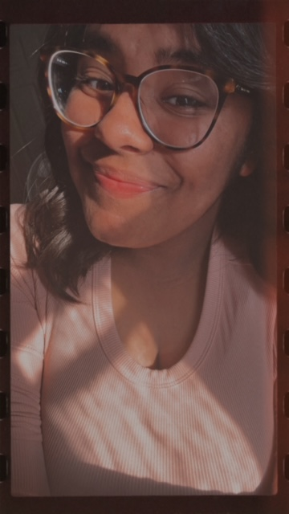

Hola! My name is Ydieliz, but no one really calls me that. They call me Ydi! Yes, I know that off the bat, my name might seem intimidating but it's not actually. I love the outdoors and sports! I do Field Hockey and Track & Field as a thrower. In Programming, we learned and worked on RPG Maker, HTML, and some Python and JavaScript. With the elements we learned in RPG Maker,we transformed that code into JavaScript. We also dived into Vscode in which we used HTML to make test sites and to make this one in which you are reading from.